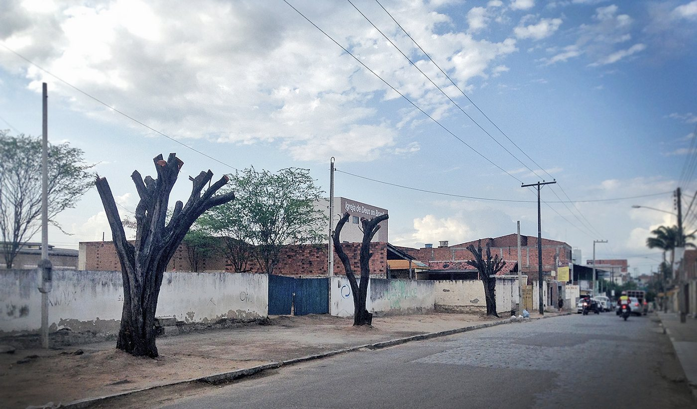
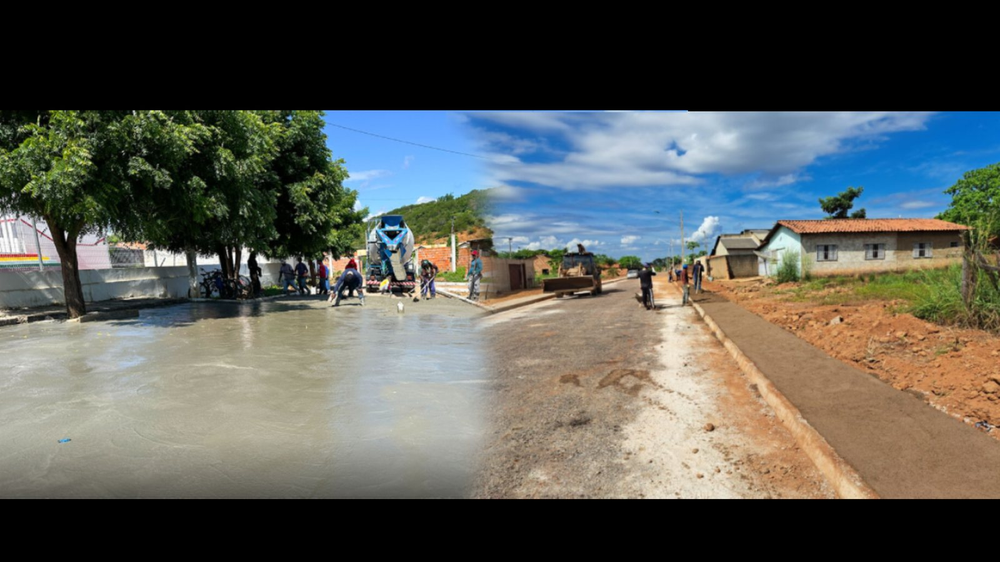

O que está acontecendo em Jequié
A falta de árvores e o desmatamento em áreas urbanas têm causado mudanças visíveis no clima da nossa cidade. Vários pontos apresentam pouca cobertura vegetal, o que afeta diretamente a temperatura, a umidade do ar e a qualidade de vida da população.
Aumento da Temperatura
Sem a sombra e o resfriamento natural das árvores, o asfalto e o concreto retêm calor, formando as chamadas “ilhas de calor”. Nessas regiões, a temperatura pode chegar a ser até 5 °C mais alta do que em áreas arborizadas.
Redução da Umidade do Ar
As árvores liberam água na atmosfera e mantêm o ar úmido. Sem elas, o clima fica mais seco — o que prejudica a respiração, resseca a pele e agrava problemas respiratórios, especialmente em crianças e idosos.
Desmatamento e Perda de Áreas Verdes
Áreas que antes tinham vegetação estão sendo substituídas por construções e estradas. Isso reduz os espaços de convivência, afasta a fauna local e elimina o principal meio natural de limpeza do ar.
📸 Situação em Imagens

